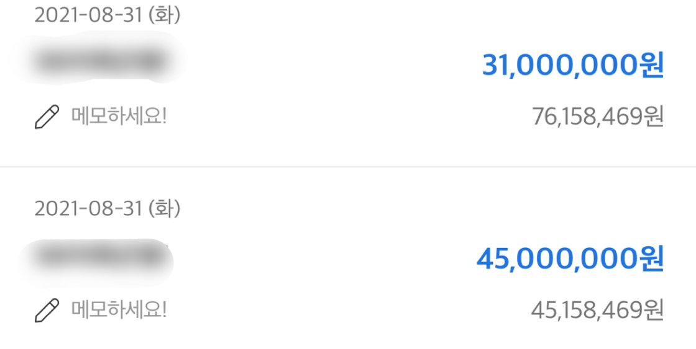

[직장인대출] 감사합니다~ 김용혁 매니저님!
기존에 대출은 많지않은데 모두 카드론이여서
신용등급도 9등급이고…2천6백정도여서
1금융권담보대출도안된다고해서
혹시나해서 문의드렸는데…
금리도 저렴하게 한군데서 7600만원 대출받았어요
연봉은 4600만원 사대보험18년가입…
제가 불안해서 자꾸 재촉도하고
귀찮게 해드렸는데…
아침부터 저녁까지 계속 알아봐주시고
승인되서 입금되는순간까지 하나하나 다~
신경써서 말씀해주셔서
카드론대환하고 여유자금까지 그리고
신용등급관리하는 방법까지 알려주셨어요
다시한번 감사드립니다!
